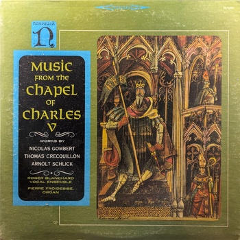Music from the Chapel of Charles V
Roger Blanchard Vocal Ensemble
Nonesuch H-71055
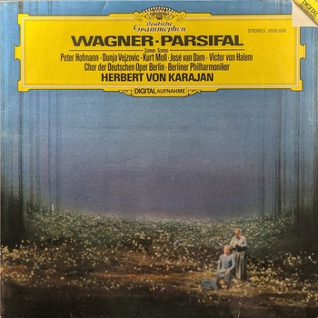Parsifal
Herbert von Karajan
Deutsche Grammophon 2532 033
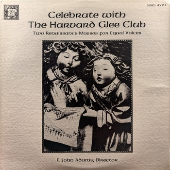Celebrate with The Harvard Glee Club: Two Renaissance Masses for Equal Voices
The Harvard Glee Club
MHS 4261
An Elizabethan Evening
Various Artists
Vanguard 3444
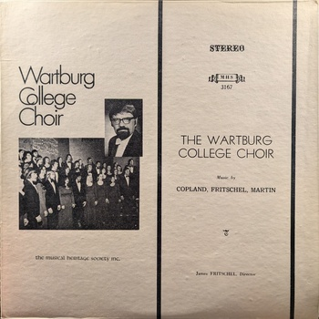The Wartburg College Choir
Wartburg College Choir
Musical Heritage Society Inc. MHS 3167
Shostakovich Fifth Symphony
Eugene Ormandy, The Philadelphia Orchestra
Columbia Masterworks
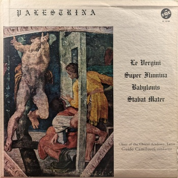Le Vergini, Super Flumina Babylonis, Stabat Mater
Palestrina
Vox PL 9740
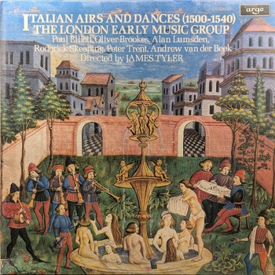Italian Airs and Dances (1500-1540)
The London Early Music Group
Argo
French Dances of the Renaissance
The Ancient Instrument Ensemble of Paris
Nonesuch H-71028
Concerti Grossi, Op. 6
Handel
Westminster W-9203
Laudate Dominum / Mystères de Notre Seigneur Jésus Christ
Michel Corrette / Henri Desmarest
MHS 4085
Missa Brevis / Madrigali
Palestrina / Marenzio
Pirouette IAS 19004
Missa Pange Lingua / Miserere Mei, Deus
Josquin des Prés
Musical Heritage Society MHS 1000
16th Century Italian Dance Music
Musica Reservata
Philips 6833 001
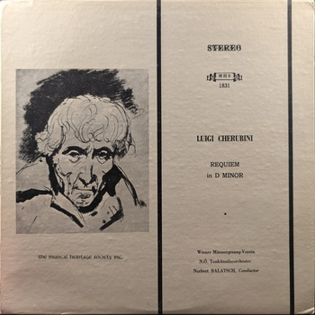Requiem in D Minor
Luigi Cherubini
The Musical Heritage Society Inc. MHS 1831
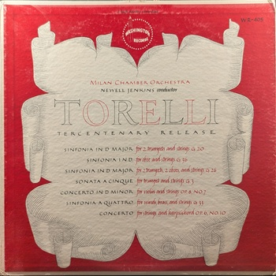Torelli Tercentenary Release
Milan Chamber Orchestra, Newell Jenkins (conductor)
Washington Records WR-405
Tristan und Isolde
Richard Wagner
Deutsche Grammophon 136 433
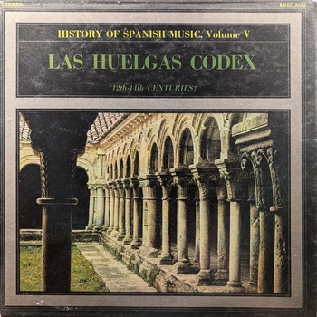Las Huelgas Codex
Various Artists
Musical Heritage Society MHS 3032
Sutherland Sings Wagner
Sutherland
London ffrr
Funeral Anthem
George Frideric Handel
Musical Heritage Society MHS 1061
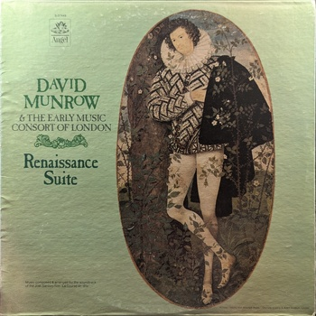Renaissance Suite
David Munrow & The Early Music Consort of London
Angel S-37469
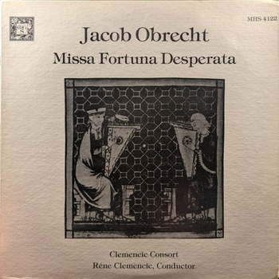Missa Fortuna Desperata
Jacob Obrecht
Nonesuch Records MHS 4122
Echoes from a 16th Century Cathedral
The Roger Wagner Chorale
Angel 36013
The Nine Muses: Suites for Harpsichord
J. K. F. Fischer
Esoteric ES-506
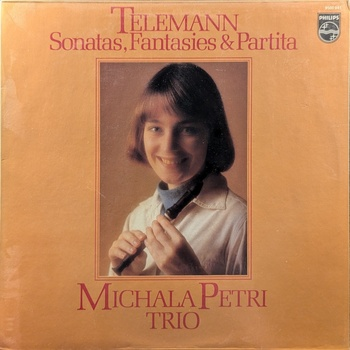Telemann: Sonatas, Fantasies & Partita
Michala Petri Trio
Philips 9500 645
{kind=link}
{kind=link}
{kind=link}
{kind=link}
{kind=link}
{kind=link}
{kind=link}
{kind=link}
{kind=link}
{kind=link}
{kind=link}
{kind=link}
{kind=link}
{kind=link}
{kind=link}
{kind=link}
{kind=link}
{kind=link}
{kind=link}
{kind=link}
{kind=link}
{kind=link}
{kind=link}
{kind=link}
{kind=link}